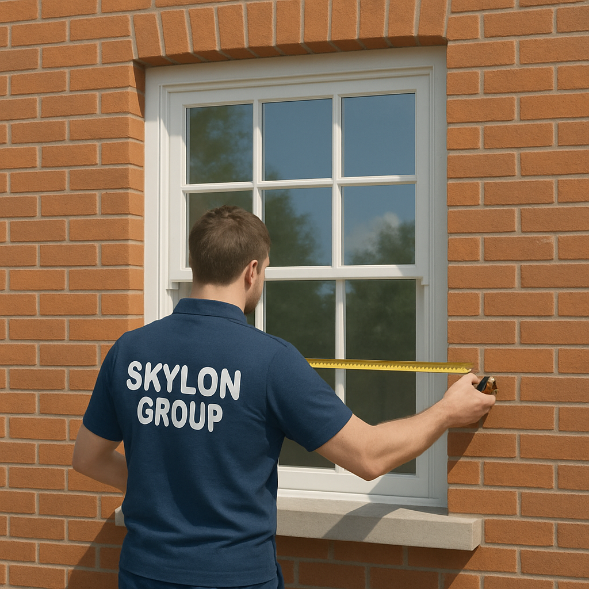
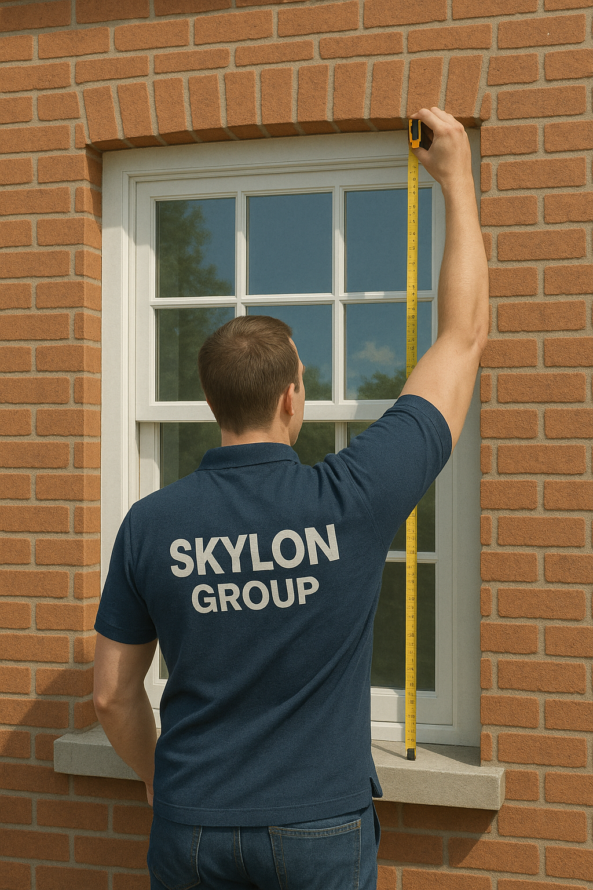
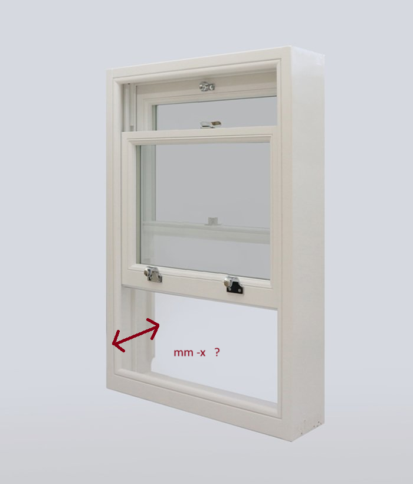

How to Measure a Window - Structural Opening
Always measure in millimeters and take multiple measurements at different points, recording the smallest dimension.
Don't worry - these measurements are for quotation purposes only. Before production begins, someone will visit to verify that the measurements and full specification are correct.
-
Measure Width (Brick to Brick)
Measure the width of the opening at the top, middle, and bottom. Record the smallest dimension obtained. This ensures your window will fit even if the opening varies slightly.
 -
Measure Height
Measure the height of the opening on the left side, center, and right. Record the smallest dimension. This ensures proper vertical fit throughout the opening.
 -
Measure Box Thickness
Open the window and measure from the outer to the inner edge of the sash window box. Record the dimension. It should be approximately 140-160mm. You likely have the same thickness for all windows throughout your home.

Required Tools
- Retractable tape measure
- Spirit level (optional)
- Pencil
- Notepad
- Calculator (optional)